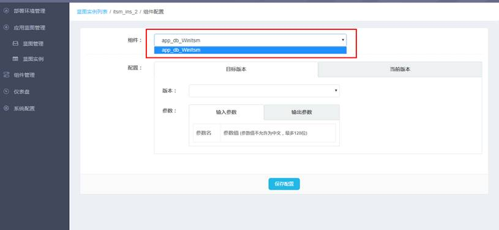
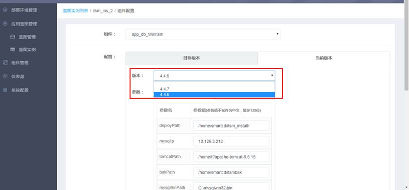
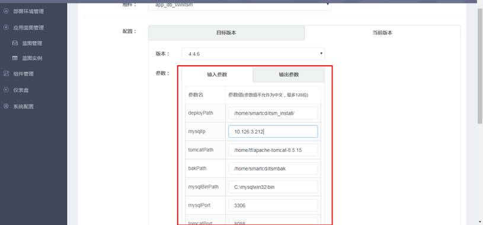

点击蓝图实例列表页的操作按钮，选择配置，可以进入到蓝图实例的配置页面
先选择组件

再选择目标版本和当前版本的组件版本

选择完版本之后编辑输入参数和输出参数：

输入参数和输出参数支持字符串和变量表达式，蓝图实例内组件输入/输出参数中动态变量配置规则分为如下三种：
${blueprint#key}、${component#current#key}、${key}。
（1）${blueprint#key}
组件引用当前蓝图实例变量，填写规则为blueprint+变量名，以#分隔，其中”blueprint”是固定字符串，意思是当前蓝图；
例如引用当前蓝图实例的port变量，写为${blueprint#port}；
注意：组件配置不支持跨蓝图引用变量，只能引用当前蓝图实例变量。
（2）${component#current#key}
跨组件引用其他组件的变量，填写规则为目标组件名(其在蓝图实例的配置界面可查到，例如tomcat_-2)+版本(current或者target)+变量名，以#分隔；
例如：rent组件当前版本选择v1版本，input中的deployPath引用tomcat组件target版本的deployPath且加上了 webapps 路径，
最终写法为：${tomcat_-2#target#deployPath}/webapps。
（3）${key}
引用当前组件的当前版本的变量，填写规则为变量名;
例如：war组件当前版本的某个变量需要引用deployPath，则写法为${deployPath}/upload。
点击保存配置按钮会根据填写的组件配置中${blueprint#key}配置项生成蓝图变量，每保存一次组件的配置都会更新蓝图变量，最后在蓝图配置中填写蓝图变量的最终值，点击保存变量按钮保存蓝图变量。如下图所示。